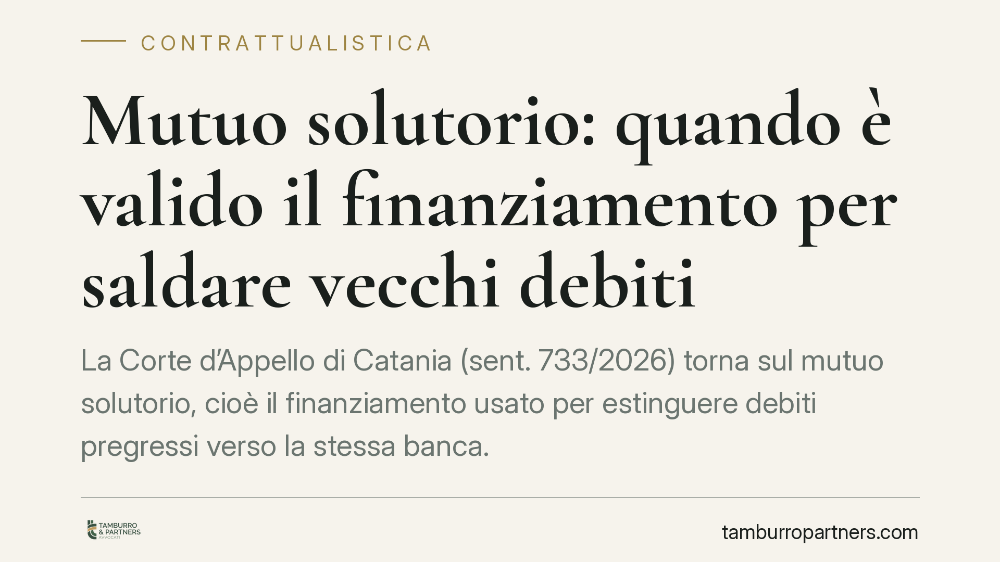

Mutuo solutorio: quando è valido il finanziamento per saldare vecchi debiti
La Corte d'Appello di Catania (sent. 733/2026) torna sul mutuo solutorio, cioè il finanziamento usato per estinguere debiti pregressi verso la stessa banca. L'operazione è valida, ma a una condizione precisa: l'effettiva messa a disposizione di nuova liquidità. Quando questa manca, il contratto rischia la riqualificazione. Vediamo cosa cambia per imprese, mutuatari e creditori.

Il caso e il principio
Il mutuo solutorio è il finanziamento concesso da una banca a un cliente che lo utilizza, in tutto o in parte, per estinguere debiti preesistenti verso la medesima banca. In pratica: la vecchia esposizione viene chiusa e sostituita da un nuovo contratto di mutuo, spesso assistito da garanzie più solide.
La Corte d'Appello di Catania, con la sentenza n. 733/2026, ha confermato la legittimità di questa operazione. Il punto dirimente non è lo scopo del finanziamento (saldare un debito pregresso), ma la sostanza economica dell'operazione: deve esserci un'effettiva erogazione di nuova liquidità al mutuatario. Se la somma viene realmente messa a disposizione del cliente, che poi la destina al rientro, il contratto è pienamente valido.
Perché serve l'erogazione effettiva
La distinzione non è formale. Il mutuo è un contratto reale: si perfeziona con la consegna della somma (art. 1813 c.c.). Se il denaro non entra mai nella disponibilità giuridica del mutuatario, ma resta una mera scrittura contabile che ripiana una vecchia posizione, l'operazione può essere riqualificata. In quel caso non si è davanti a un nuovo mutuo, ma a una semplice dilazione o novazione del debito originario, con conseguenze rilevanti sulle garanzie e sui titoli.
Il tema si lega anche alla disciplina delle crisi d'impresa. I riferimenti agli artt. 182-bis e 182-quater della legge fallimentare (R.D. 267/1942) richiamano gli accordi di ristrutturazione e la cosiddetta prededucibilità dei finanziamenti funzionali al risanamento. In questi contesti il confine tra finanziamento nuovo e consolidamento di esposizioni pregresse incide direttamente sul trattamento del credito in sede concorsuale.
Il limite: le frodi ai creditori
La validità del mutuo solutorio non è un salvacondotto. La Corte lascia espressamente salvi i rimedi contro gli atti in frode ai creditori. Il riferimento è all'azione revocatoria ordinaria (art. 2901 c.c.) e, in ambito concorsuale, alla revocatoria fallimentare.
Il rischio concreto è questo: usare il mutuo solutorio per trasformare un credito chirografario (senza garanzie) in un credito ipotecario, a danno degli altri creditori dell'impresa. Quando l'operazione altera la par condicio creditorum — la parità di trattamento tra i creditori — può essere aggredita e privata di effetti, anche se il contratto è di per sé valido.
Implicazioni pratiche
Per le banche, la sentenza conferma uno strumento utile per gestire posizioni deteriorate, ma impone rigore nella documentazione: l'erogazione deve essere tracciabile e reale.
Per le imprese e i mutuatari, il mutuo solutorio può offrire respiro finanziario — tassi rinegoziati, piani di ammortamento più sostenibili — ma spesso comporta nuove garanzie, tipicamente ipotecarie. Occorre valutare con attenzione cosa si offre in cambio della ristrutturazione.
Per i creditori terzi, la pronuncia ricorda che l'operazione non è intoccabile: se penalizza ingiustamente le loro ragioni, restano i rimedi revocatori.
Cosa fare in concreto
- Verificate l'erogazione effettiva: pretendete evidenza documentale che la somma sia stata realmente messa a disposizione del mutuatario, non solo girocontata internamente.
- Valutate le garanzie richieste: prima di accettare un mutuo solutorio, misurate il peso delle nuove garanzie rispetto al beneficio ottenuto sul debito pregresso.
- Controllate il contesto temporale: se l'impresa è prossima a una procedura di crisi, considerate il rischio revocatoria; un'operazione fatta nei periodi "sospetti" espone a contestazioni.
- Inquadrate l'operazione nel piano: in presenza di accordi di ristrutturazione, verificate la coerenza con gli artt. 182-bis e 182-quater e il regime di prededucibilità.
- Richiedete una due diligence sulle posizioni pregresse: una ricognizione preventiva evita che la ristrutturazione nasconda criticità poi difficili da sanare.
La pronuncia di Catania consolida un orientamento ormai radicato, ma sposta l'attenzione dove conta: sulla sostanza economica dell'operazione. Consigliamo di trattare il mutuo solutorio non come una mera formalità contabile, ma come un contratto che va costruito e documentato con cura.
---
Contributo informativo a cura di Tamburro & Partners — Avv. Giuseppe Tamburro. Non costituisce parere legale.
Ogni contratto ha il suo equilibrio.
Se vuoi una revisione delle clausole o una redazione su misura, scrivi allo studio. Ti rispondiamo entro un giorno lavorativo.